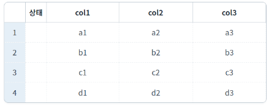
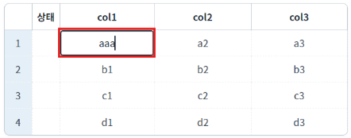
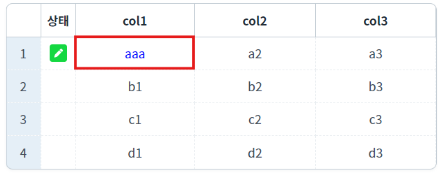
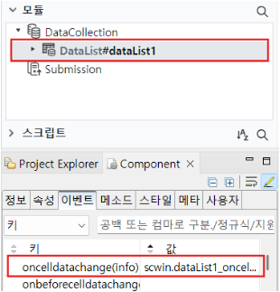

DataList의 oncelldatachange 이벤트 예제입니다. 이 이벤트는 DataList가 연결된 셀의 값이 변경된 경우 발생합니다.
이벤트 핸들러에서 확인할 수 있는 정보는 다음과 같습니다.
info.oldValue: 원본 값
info.newValue: 변경된 값
info.rowIndex: 셀의 행 인덱스
info.colID: 컬럼의 ID
oncelldatachange 이벤트 발생 시 변경된 셀의 데이터 색상 변경하기
oncelldatachange 이벤트 발생 시 로그 출력하기
1
STEP 1: 초기 상태 확인하기
GridView에서 셀의 초기 값을 확인합니다.
Image 1.브라우저(Chrome) 실행 예시

2
STEP 2: 셀을 클릭하여 값을 변경합니다.
'col1'의 첫 번째 행의 값을 변경하였습니다.
Image 2.브라우저(Chrome) 실행 예시

3
STEP 3: 실행 결과를 확인합니다.
텍스트 색상이 파랑색으로 변경되고, 핸들러를 통해 로그가 출력됩니다.
Image 3.브라우저(Chrome) 실행 예시

Example 1.Log
[10:11:33] # oncelldatachange event 이전 값 : a1 현재 값 : aaa
1
STEP 1: DataList의 oncelldatachange 이벤트 핸들러를 설정합니다.
DataList 이벤트를 적용할 때는 '모듈' 바에서 이벤트를 적용할 DataList를 선택한 후, 이벤트 탭에서 확인합니다. 예제 파일에서는 핸들러로 사용할 메소드명을 'scwin.dataList1_oncelldatachange'로 설정하였습니다.
Image 4.웹스퀘어 스튜디오의 Component View - 이벤트 설정 예시

2
STEP 2: 'scwin.dataList1_oncelldatachange' 이벤트 핸들러를 정의합니다.
Example 2.Script
scwin.dataList1_oncelldatachange = function (info) { // info : oldValue, newValue, rowIndex, colID var rowIndex = info.rowIndex var columnId = info.colID // 변경된 셀의 텍스트 색상을 blue로 변경 gridView1.setCellColor(rowIndex, columnId, "blue"); // textarea에 log 출력 let strLog = "# oncelldatachange event\n"; strLog += "이전 값 : " + info.oldValue + "\n"; strLog += "현재 값 : " + info.newValue; $c.frame.printExampleLog(strLog, txa_log, false); console.log(strLog); console.log(info); };
oncelldatachange